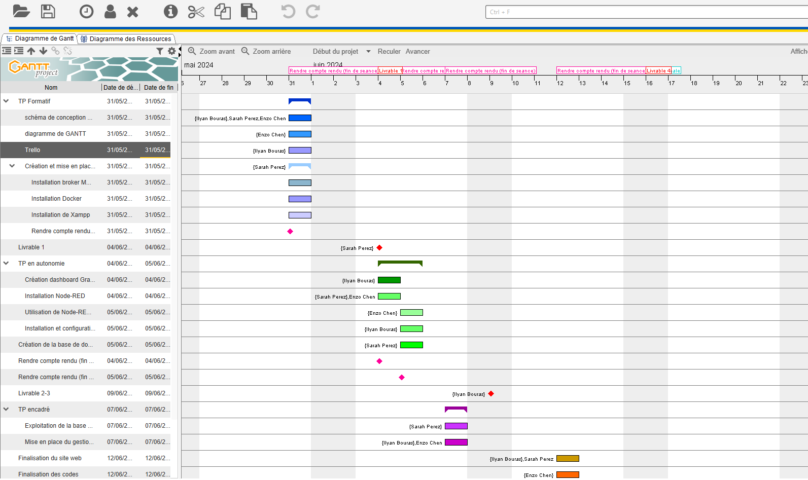
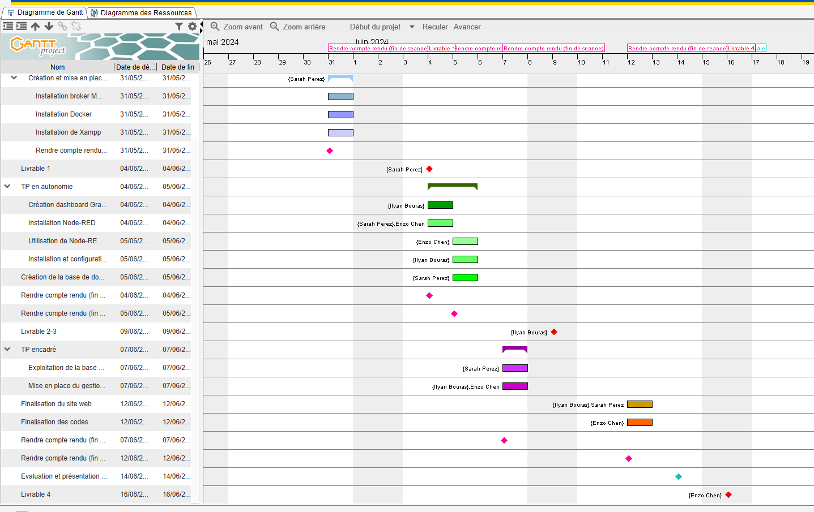
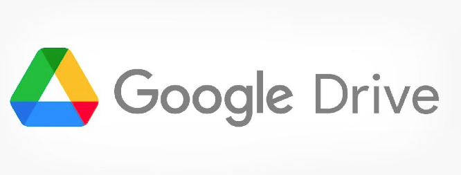

Diagramme de Gantt


Outils collaboratifs
Nous avons utilisé plusieurs outils pour cette sae :

Synthèse de chaque membre pour cette sae :
Sarah Perez : J'ai trouvé cette sae plus intéressante que la sae 15 car cette fois ci nous étions en groupe et il fallait réaliser un site web plus poussé.
En revanche, j'ai eu beaucoup de difficultés pour la base de données et pour réaliser le site web.
Avec beaucoup de recherche sur internet, j'ai réussi à trouver des solutions afin que le travail que je devais effectuer fonctionne.
C'est une sae que j'aimerais refaire mais avec plus de temps et de connaissance.
Enzo Chen : J'ai trouvé la SAE23 plutôt intéressante car elle ressemble beaucoup à la SAE15, mais avec un niveau de difficulté plus élevé.
Cependant, j'ai eu du mal au début de cette SAE car nous avons rencontré des problèmes avec la base de données. De plus,
je trouve que nous n'avons pas eu assez de temps pour bien approfondir tous les aspects du projet. Malgré ces défis, dans l'ensemble, j'ai bien aimé cette SAE.
Ilyan Bouras : C'était une sae intéressante malgrès le fait qu'il manquait des heures afin de finir le projet.
Problèmes rencontrés :
Nous avons renconté plusieurs problèmes dans cette sae :
- Installation de la VM : manque de place sur le clé USB/ordinateur, pas de réseau sur la VM, VM qui bug lors de l'installation
- Node-RED : pas de réponse lors de l'envoie des données, mauvaise valeur dans les configurations
- Base de données : mauvaise configuration de la base de données, lien entre les tables mauvais
- Site web : css qui ne marchait pas, difficulté avec les scripts php, mauvais lien pour faire la connexion entre les pages html et la base de données afin de se connecter avec l'administrateur ou le gestionnaire.
- Grafana : mauvais changement d'IP
Solutions proposés :
Pour résoudre ces problèmes nous avons :
- Réinstallation de la VM (plusieurs fois)
- Beaucoup de recherche sur internet
- Regarder des vidéos
- Pris les informations dans ces vidéos
- Demander de l'aide au professeur et aux autres groupes de TP
Conclusion
Cette sae était interessante, le cahier des charges était long mais on a fait au mieux pour le respecter.